Dai Bo 1155053920
ind2 = (np.abs(stu)>smallflow) | (np.abs(stv>smallflow))
-> ind2 = (np.abs(stu)>smallflow) | (np.abs(stv)>smallflow)
| Case | AAE | EPE | Executive Time |
|---|---|---|---|
| Venus | 10.488 | 0.759 | 20m32.488s |
| Urban3 | 10.124 | 1.101 | 47m43.110s |
| Urban2 | 7.913 | 1.287 | 49m19.237s |
| RubberWhale | 10.251 | 0.315 | 34m7.649s |
| Hydrangea | 5.525 | 0.487 | 34m10.310s |
| Grove3 | 9.844 | 1.017 | 43m9.266s |
| Grove2 | 4.862 | 0.333 | 40m27.557s |
| Dimetrodon | 4.904 | 0.258 | 27m44.466s |
| Average | 7.988875 | 0.694625 | N/A |
The program is too slow when the frame size is large, so maybe fewer number of warping iterations or fewer number of levels in pyramids is needed to save time.
| Venus | |
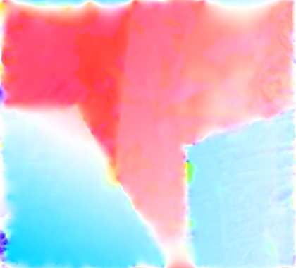 | |
| Urban3 | 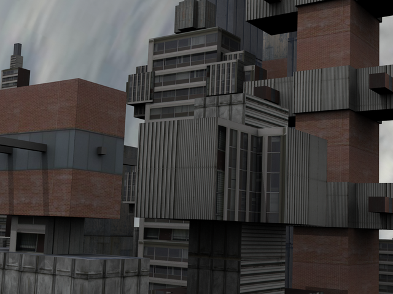 | 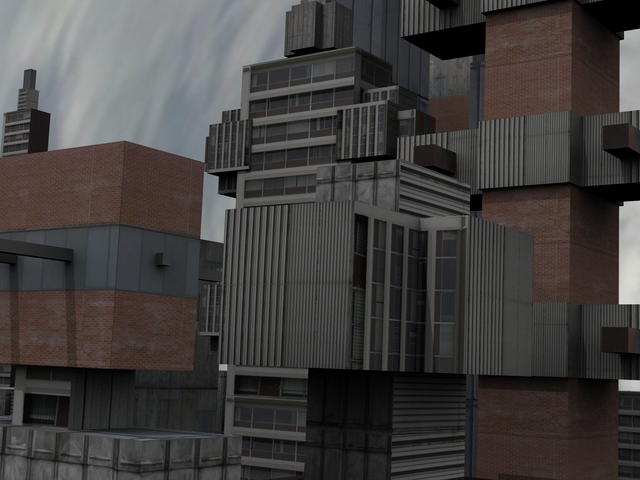 | |
| Urban2 | 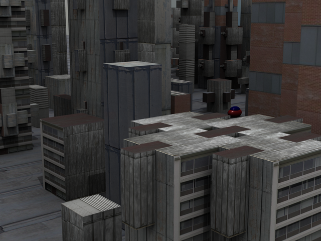 | 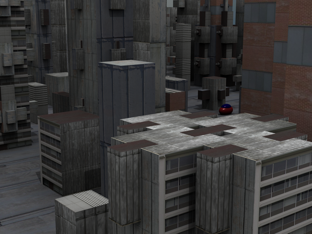 | 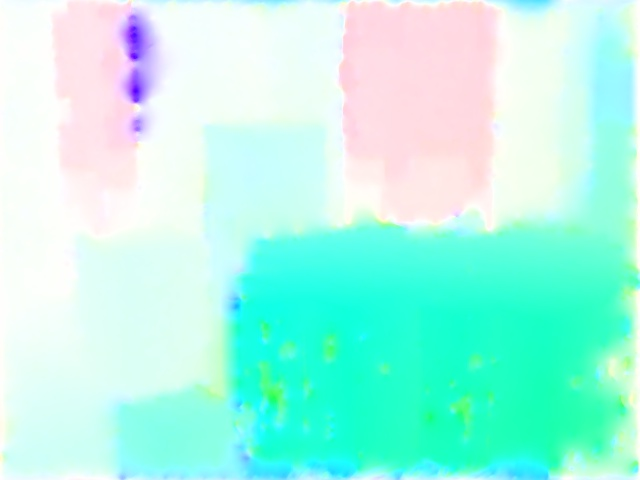 |
| RubberWhale | 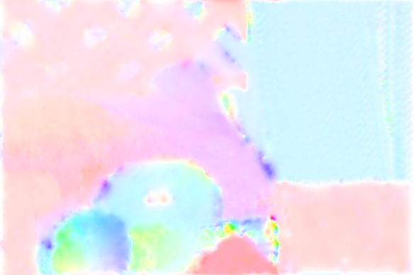 | ||
| Hydrangea | 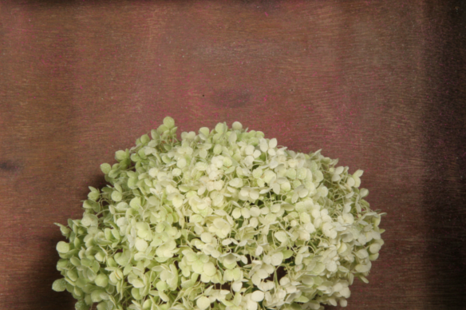 | 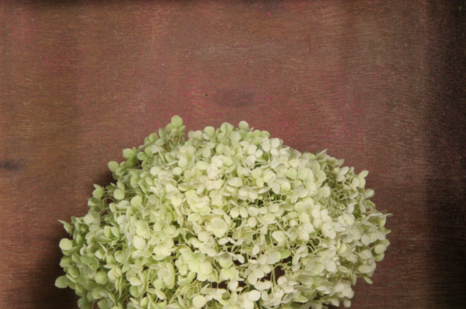 | 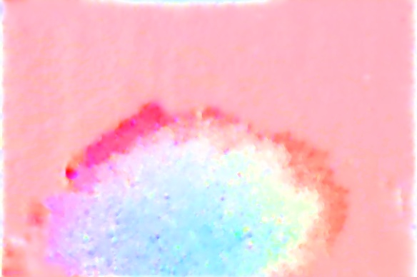 |
| Grove3 | 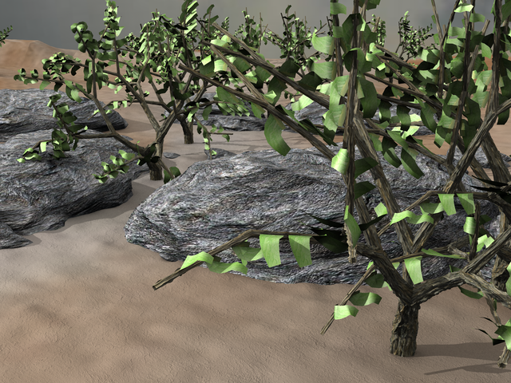 | 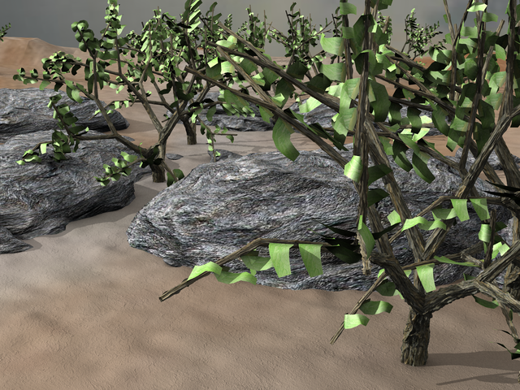 | |
| Grove2 | 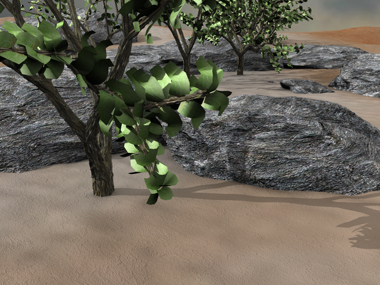 | 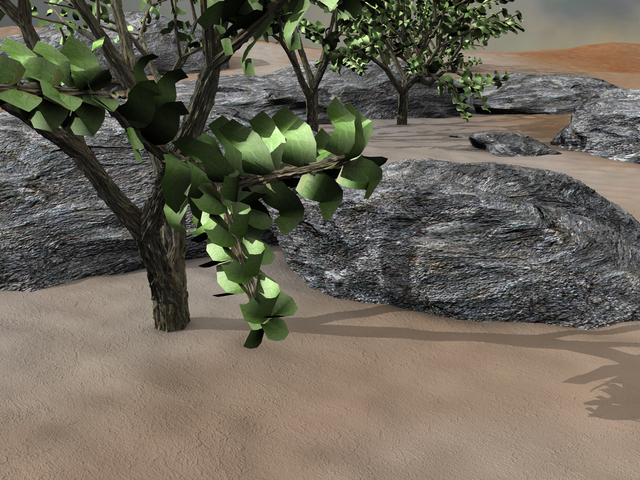 | 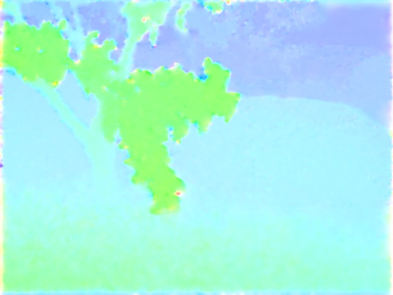 |
| Dimetrodon | 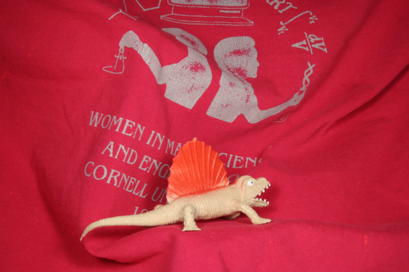 | 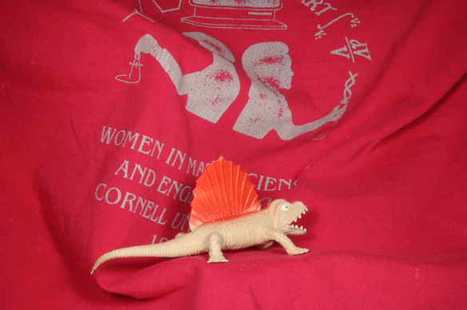 | 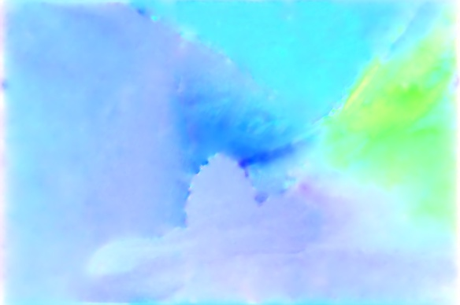 |